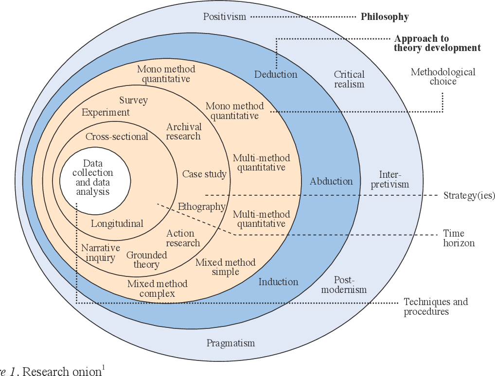

6 Some general notes about writing a problem statement
The general structure of questions in most economic analyses is: What is, has been, or will be the impact of A on B?
6.0.1 Where do you find a problem in macroeconomics?
Many economic queries attempt to measure social consequences, and most often try to assign a financial value to those consequences. Sometimes this is phrased as a “comparative outcome” or “alternative scenario”. Normally this means that one option is better than another. This is not surprising, since pretty much all macroeconomic variables are aggregated financial values or derivatives thereof.
Other ways to frame a question could be:
Why is one option better than the other? How can you tell?
How does a change in X affect income for the economy / households / teachers?
How many people are employed?
Labour productivity?
How is the standard of living affected?
These are justification options (evidence) to motivate why an investigation is a good idea. Just remember that you need to be able to find the evidence to back up your arguments. As noted in the example of an introduction flow above, your selection of a method should be the logical conclusion of your reading.
6.0.2 Answering the Why?
Why is it that investigating this problem will be beneficial? To answer the question generally requires awareness of:
What?
When?
Where?
Who?
In what way?
How?
These things are the specifics of the problem statement, but they will not provide you with the answer to why it is important.
The best place to find an answer to why? is to read some of the most recent work on the topic you have found. Anything that has been published has been read and edited by at least 5 people by the time it goes to a journal. The arguments in those articles should therefore be pretty reasonable.
Once you understand your why? you can start with the specifics
6.0.3 What?
For example: If you chose to research currency markets, some of the sub-categories could be (What?):
Trading platforms
Exchange rate policies
Regulations
Common currency areas
Clearing and settlement systems
Speculation
Risk-mitigation / hedging
This delimitation is often determined by the problem area that you identify. Normally illustrated by something interesting or concerning, which leads you to think that investigating the area might be interesting.
You can go the other way around, and check what has been written about recently or is currently being funded at the EU or national levels. Read some of the latest literature relating to it and then identify if there is a similar problem in an area that has not yet been investigated.
A third possibility is to open up some of the really amazing data repositories of major institutions and see if some of those can inspire you.
6.0.4 When?
You need to be carefully aware of what time period you choose to investigate, as it has direct consequences for the types of conclusions you can make from your analysis. If you look at 1950 -1970 consumption data, you can’t really say anything intelligent about the use of disposable income in 2020.
Historical analysis is crucial in economics, but you should always be aware of how the structure of the economies of the world have shifted over time.
Education rates, the type of institutions that exist, levels of unemployment, the size of government, etc.
A trendy catch phrase for this kind of context is PESTLE, an anagram for how the context of countries change:
Political
Economic
Social
Technological
Legal
Environmental
Please don’t write this list out and do a PESTLE analysis in your projects, it is just to tell you that there are many changes that take place over time. And that you need to think specifically about time in your problem statement.
6.0.5 Where?
This is quite obvious but is not only related to geographical borders. For example, a study could be:
National
Municipal
Regional
Global
Local (or micro)
6.0.6 Who?
Which groups are involved in your project, and who is it that will be interested in reading the results of your research? Who will the research / problem investigation be useful or interesting for.
Demographic specific (Ex., students, low-income families, employees at public institutions)
Institution specific (Ex. Banks, the national bank, the stock exchange, or one specific institution)
Industry specific (Ex. Mining, agriculture, home owners associations, mortgage institutes, or alternatively at a “sector” level, such as households, firms, government etc.)
Country specific
Etc.
6.0.7 In what way?
You also need to know what kind of impact or relationship you are looking for. Is it,
How much of the behaviour of A can be explained by B?
Is it a theoretical or empirical issue or are you interested in?
Or how much influence will A have on B? Or vice versa, or both?
Is it causal? Are you arguing that one thing is causing another thing? – you have to be quite careful trying to do these ones.
6.0.8 How?
Finally, you need to be able to explain how you are going to investigate the problem. You should consider your tools and your course on methodology (and philosophy of science) to be able to figure out how will you answer the question.
You can boggle your brain a bit with the wiki-page on philosophy of science here:
https://en.wikipedia.org/wiki/Philosophy_of_science
Recall that methodology is layered, a very simplistic way to think about it is as a hierarchy:
> Philosophy of science
-> Methodology
--> Theory
----> Methods
You can watch a few videos about what this is:
This one is pretty good, but a little dry: https://youtu.be/IvwkMxgahA4
Daniel Hausman - This one has some interesting perspectives (but is much better in 2x speed): https://youtu.be/EfF6WD8s_ps (but he doesn’t really list any specific philosophies)
Paul Hoyningen-Huene at Leibniz Universität Hannover has a whole course on it if you get really caught up in it - https://www.youtube.com/watch?v=tP8teUgZcBY&list=PLGV2ddg-PFGvWKDeTyrUji7TXY8y1SHjl (He is pretty entertaining and you could learn a lot in his course – and have a few laughs at dad jokes – in 22 lectures)
Marc Lavoie – This might help if you are interested in locating the theory you are using in either heterodox or orthodox categories of economic methodology. Disclaimer: I do not believe this is a constructive way to categorise methodology, but it is a common way. https://youtu.be/DEROFQIao4o
The philosophy of science defines what kind of results will be considered valid. For example, is it valid to make a conclusion about the future based on the past (i.e. to use data to make predictions)?
Some examples of this are:
Cartesian / Euclidian philosophies of science
The Babylonian mode of thinking
Critical realism
Scepticism
Logical positivism
This colour coded conceptual map of philosophy might put some of the terms you come across into perspective (with some spin on “education”):
https://cmapspublic3.ihmc.us/rid%3D1196256709922_36526043_8120/1196256715039I908793757I8261Iimage
Theories use methods, and methods are part of a particular methodology, and the methodology is made valid by the theory of science inside which it fits.
Methods are at the bottom of the pyramid, and can be quantitative or qualitative, or a combination of both. It is important to be aware of what you are doing and using. They are normally used to motivate one or another theory.
This stuff can be extremely dry and boring, or it can also be super interesting (if you are into it). It is how we know, that we know, that what we know, is really something factual – or what a fact is in the first place. It is closely related to metaphysics, epistemology and ontology. None of which will help you cook an egg in the morning, but you might find the study as fascinating as I do (even if I will never suck up the energy to finish reading Immanuel Kant’s Critique of Pure Reason).
This Saunders et al. research onion is a pretty useful way to think about each of the decisions we make when constructing out research. Starting from the outside moving inwards:

Source: Saunders, Lewis and Thornhill (2019), Research methods for business students